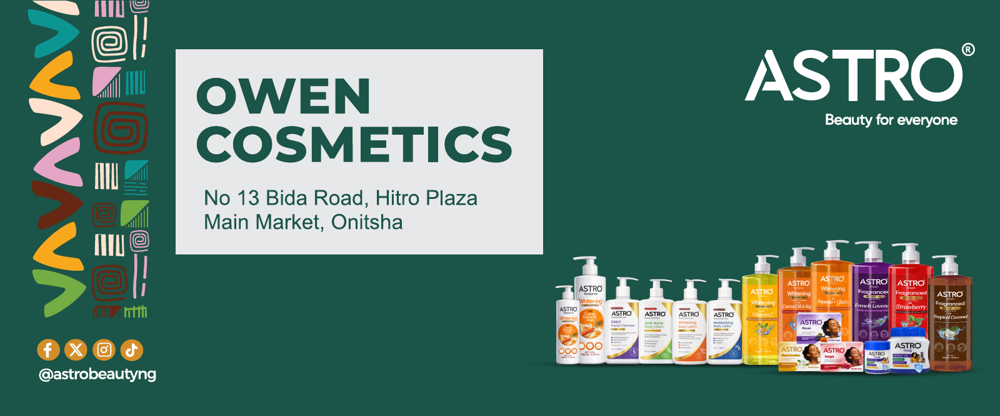

Creative brief
Clarify the audience, message, intended channel and brand requirements. Define what the viewer should understand or feel.
An idea is only the beginning. Here’s how I use creative direction, generative tools and editorial judgement to make branded stories move.
Turn a simple beauty message into a short commercial with a clear beginning, a visual payoff and a recognisable brand close.
My work brings together concept development, visual direction, AI-assisted image and motion production, and editing. The film below is a finished creative sample; the process notes explain my general approach, not a reconstruction of the original client brief or a claim that every intermediate is shown.
Watch the completed Astro creative before exploring the decisions behind the work.
A story-led piece built around a human moment, a product reveal and a branded close. The final creative combines AI-assisted visual development with editing and compositing.
Open film in Google Drive ↗A practical overview of how I approach AI-assisted brand production—from defining the problem to delivering the final output.
Clarify the audience, message, intended channel and brand requirements. Define what the viewer should understand or feel.
Find a visual hook and map the story: opening moment, scenes, product reveal and final brand message.
Explore composition, lighting, setting and product placement with AI image tools. Select and refine visuals that fit the intended direction.
Use AI video generation to explore movement and transitions, then choose shots for storytelling, continuity and realism.
Bring the selected material into editing and compositing tools. Refine pacing, transitions, typography, sound and the product reveal.
Check product identity, label accuracy, anatomy, continuity, legibility and the final brand lockup. Rework or reject frames that do not hold up.
Export the finished piece for its intended digital format and review it as a viewer would: clear message, consistent identity and a purposeful close.
Process description reflects my working approach. The original brief, prompts and intermediate generations are not reproduced here; available visuals are labelled as final-work samples.
The strongest result is not necessarily the first generation. The work is in selecting, refining and making the message feel true to the brand.
Prioritise a clear hook, readable type and a recognisable end frame.
Pay close attention to pack shape, logo, label and colour consistency.
Review hands, faces, movement and transitions for distracting artefacts.
Additional Astro work selected from recent files: a brand film and a retail artwork. These are presented as separate pieces, not as stages of the AI film.
A portrait-led brand film celebrating beauty across generations, using intimate imagery, a considered visual rhythm and a simple Astro brand close.

A retail application that brings store information, the Astro identity and product range together in one wide-format composition.
Creative samples are shown to demonstrate visual communication and production, not as claims of campaign performance or product efficacy.
Creative leadership, brand design and AI-assisted motion—grounded in a clear idea.